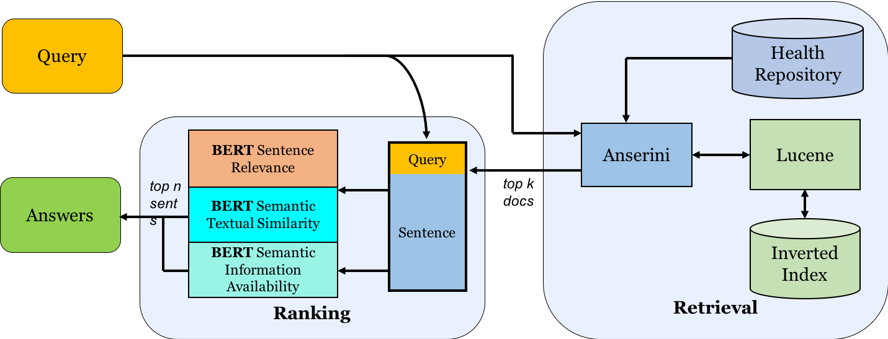
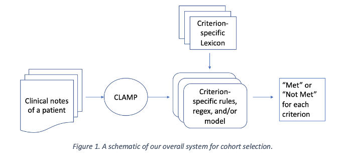
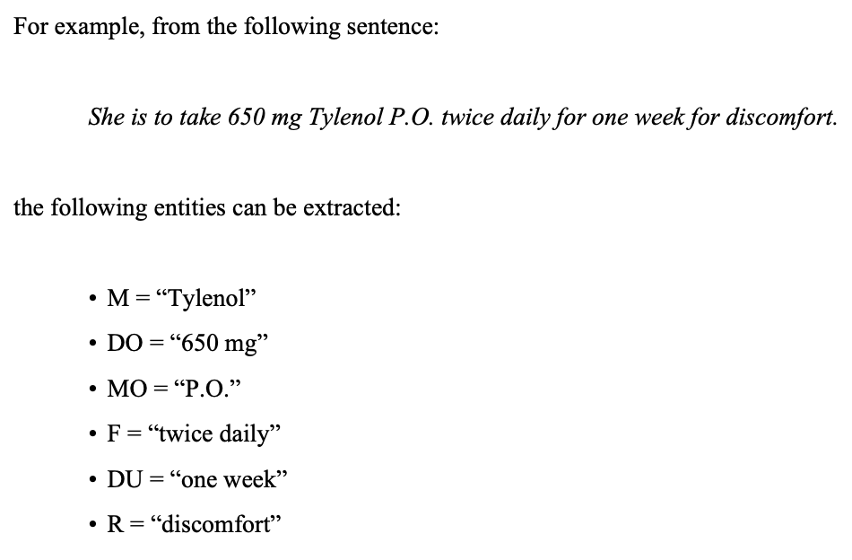

Research and Projects
I have been researching in the Clinical Natural Language Processing (NLP) space for the past 7 years. The overarching theme of my work is semantic parsing of clinical data (like Electronic Medical Records) to extract information that can be used to make actionable decisions for healthcare delivery and contribute to downstream research work.
-
At Arizona State (2014-20), I worked under Dr. Chitta Baral in the Cognition and Intelligence Lab throughout my BS and MS, where I had the opportunity to collaborate on research projects at organizations like the Mayo Clinic
-
At the University of Illinois (2020-24) as a medical student, I am currently working under Dr. Yoga Varatharajah on semantic processing of EEG-related medical notes.
-
I have several (non-research) projects on GitHub, including
-
emacs-secondmate, a "mini-imitation" of GitHub Copilot for Emacs via HuggingFace Transformers
-
clinitokenizer and clinisift, BERT-based off-the-shelf tools for medical sentence tokenization and Named Entity Recognition, respectively
-
Below are a few of the projects I've worked on. There are also more details on Google Scholar, my resume, or LinkedIn.
SCORE-IT: A Machine Learning-based Tool for Automatic Standardization of EEG Reports
In this work, we propose a machine learning-based system that automatically extracts components from the SCORE specification from unstructured, natural-language EEG reports. Specifically, our system identifies (1) the type of seizure that was observed in the recording, per physician impression; (2) whether the session recording was normal or abnormal according to physician impression; (3) whether the patient was diagnosed with epilepsy or not.
Best Paper Award at 2021 IEEE Signal Processing in Medicine and Biology Symposium (SPMB).

Multi-Perspective Biomedical Semantic Question-Answering (MS Thesis)
This work introduces the concept of a Multi-Perspective IR system, a novel methodology that combines multiple Transformers-based deep learning and traditional IR models to better predict the relevance of a query-sentence pair, along with a standardized framework for tuning this system.
Given a query in natural language, search across 29 million PubMed abstracts and identify top n candidate sentences that answer the query. To better "understand" and rank candidates, a weighted "Multi-Perspective" approach, utilizing three BERT models trained on different tasks, is taken.

Clinical Trial Eligibility Classification from Electronic Medical Records
Selecting cohorts for a clinical trial requires costly and time-consuming manual chart reviews resulting in poor participation. From natural-language patient medical records, our system classifies whether a patient is within or outside 13 clinical trial cohorts (i.e. alcohol abuse, drug abuse, MI within past 6 months, advanced coronary artery disease).
Part of the n2c2 2018 Challenge – ranked #1 out of 47 teams.

Prescription Information Extraction from Electronic Health Records (BS Thesis)
Bidirectional LSTM + CRF neural architecture for Named Entity Recognition applied to the i2b2 2009 Medication Information extraction challenge.
